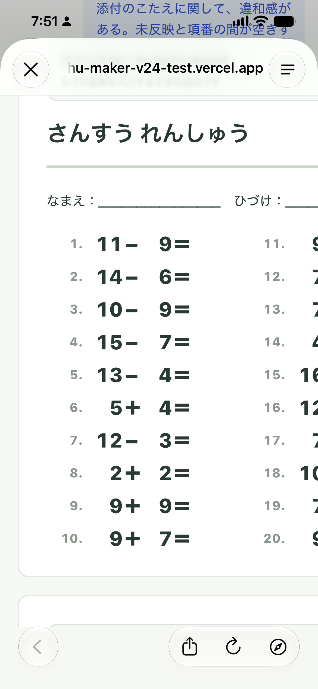
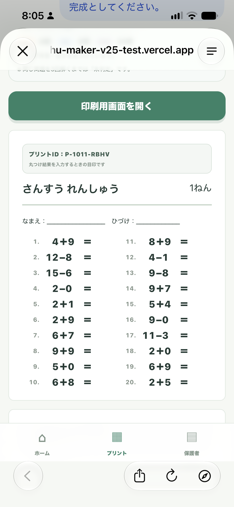
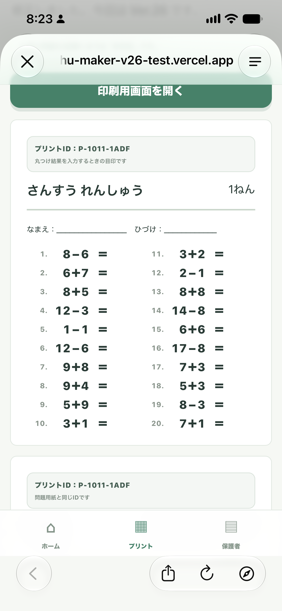

今、「おうち学習メーカー」という、子供向けの学習プリントを作るアプリを制作しています。
まだ制作途中なので、機能や使い方は完成してから詳しく紹介する予定です。今回は、作っている途中で気づいたことを残しておきます。
それは、AIに「動くもの」を作ってもらうことと、「見やすいもの」に仕上げることは、少し違うということです。
計算問題は出た。でも、なんか気になる
算数の問題を並べる。数字を表示する。印刷できる形にする。少しずつ形になってきました。
ところが、実際にスマホで見ると、気になるところが出てきます。
「マイナスの右側だけ、空いて見える」
「数字とイコールが近すぎる」
「問題と問題の間隔が、なんとなく不ぞろい」
どれも小さなことです。でも、子供が毎日使うプリントだと思うと、意外と気になります。

「そこを直して」で、別のところが変わる
そこで、いつものようにAIにお願いします。
「この空白を調整して」
すると、今度はイコールの位置が気になる。「位置をそろえて」と頼むと、別の行の間隔が気になる。
一つ直す。画面を見る。また気になるところを見つける。この繰り返しです。
僕の頭の中では「普通の、見やすい計算プリント」にしたいだけなのですが、その「普通」を言葉にするのが難しい。

「いい感じ」を、もう少し細かく伝える
今回あらためて感じたのは、プロンプト、つまりAIへの指示の大切さです。
「見やすくして」だけでは、自分の思っている見やすさが伝わるとは限りません。
たとえば、「数字を大きくして」だけでなく、「子供が読みやすい大きさにしつつ、答えを書く場所を残したい」。
「間隔をそろえて」だけでなく、「問題ごとの行間をそろえたい」「数字と記号の間隔を整えたい」「イコールの位置は動かしたくない」。
どこを変えたいのか。どこはそのままにしたいのか。そこまで分けて伝える必要があるのだと思いました。
ただ、最初から全部をうまく説明できるわけではありません。できた画面を見て初めて、「自分はここが気になっていたんだ」と分かることもあります。
作れるようになったからこそ、気になる
調整を重ねて、少しずつ自分のイメージに近づいてきました。

もちろん、これで完成というわけではありません。スマホでの見え方も、印刷したときの使いやすさも、まだ確認していきたいと思っています。
自分ではコードを書けなくても、AIと一緒なら形にできる。でも、出来上がったものを見て「ここはもう少し」と感じるのは自分です。
文字の大きさ。余白。行間。そういう、普段はあまり意識しない部分に、今回は思った以上に時間を使っています。
おうち学習メーカーの詳しい紹介は、完成したらあらためて。今はまだ、AIと一緒に「なんか違う」を一つずつ直しているところです。